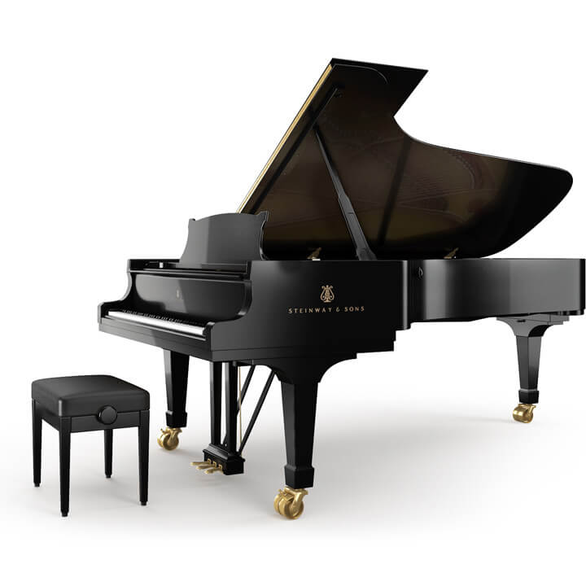

ＹａｍａｚａｋｉＰｉａｎｏ
ＹａｍａｚａｋｉＰｉａｎｏ
概 要
10年間にわたり、ＹａｍａｚａｋｉＰｉａｎｏは、妥協のないより優れたピアノを輸入し
お客様に安心して使っていただけるように情熱を傾けてまいりました。
ピアノという楽器は一生お使いいただける物ですので、お客様の相棒となるような
個性あふれるピアノ達を是非ご来店して試弾してみてください。
その他にも、ピアノの注文販売や調律・整備などを承りますので、
気軽にご相談ください。
最新入荷情報
STEINWAY&SONSのD-274でございます。
奥行き274cm、荘厳とも言うべき佇まいの コンサートグランドの頂点を極めるモデルです。
世界を代表するピアニスト、そして最高水準の音楽的表現を追求する方々から圧倒的に 支持されています。
フルコンサイズのピアノですので、音がとても良く鳴り、響きます。
ＹａｍａｚａｋｉＰｉａｎｏでは店頭で試弾することができます。
是非ご来店して頂き、お客様の手で試弾してみてください。